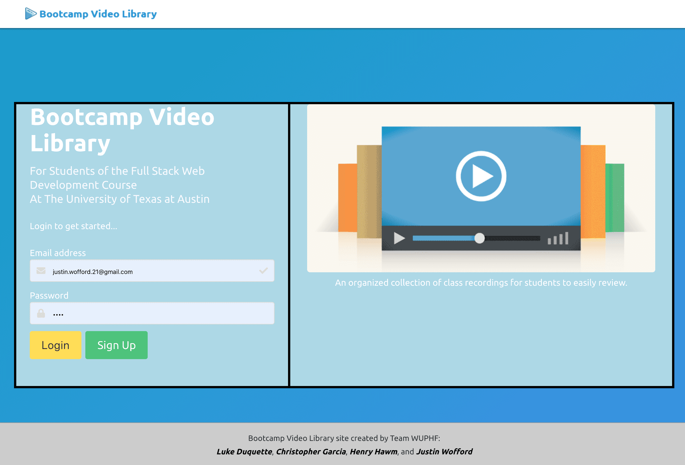

This application draws from public information to obtain free trails, camp grounds, and parks for
your 4-legged pooch! Also provides weather data for your location! As dog owners, we wanted to find
areas in the US where we can camp/hike with our dogs off-leash, so that we can spend quality time
with our dogs and allow them to explore nature. Clicking on a state will return results for
locations near you.
Click here to visit the Repository
Click here to visit the Deployed Site
This application will allow for the creation of a video library to house the class recordings for
the web developer bootcamp. The admin (creator) will submit video links, video titles, and a few
keywords of the key concepts that were discussed in that day’s recording. The non-admin user
(student) will access the videos and will have the ability to post comments on the individual
recording pages with questions, comments or helpful links on the subject matter. For an API, we are
considering displaying Udemy courses or even just Google search results based on the keywords that
are specific to each video.
Click here to visit the Repository
Click here to visit the Deployed Site


A solution for managing a company's employees using node.js, inquirer, and MySQL. This Content
Management System will allow Admins to add and view employees, departments, and roles. The Admin
will also be able to update employees roles and assigned manager.
Click here to visit the Repository
A software engineering team generator command line application. The application will prompt the user
for information about the team manager and then information about the team members. The user can
input any number of team members, and they may be a mix of engineers and interns. When the user has
completed building the team, the application will create an HTML file that displays a nicely
formatted team roster based on the information provided by the user.
Click here to
visit the Repository

An application that can be used to write, save, and delete notes. This application uses an express
backend to and save and retrieve note data from a JSON file.
For users that need to keep track of a lot of information, it's easy to forget or be unable to
recall something important. Being able to take persistent notes allows users to have written
information available when needed.
Click here to visit the Repository
Click here to
visit
the Deployed Site
A command-line application that dynamically generates a PDF profile from a GitHub username. When
preparing a report for stakeholders, it is important to have up-to-date information about members of
the development team. Rather than navigating to each team member's GitHub profile, a command-line
application will allow for quick and easy generation of profiles in PDF format.
Click here
to visit the Repository